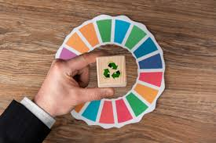

Impacto de las 7 R´S en la comunidad (CHALCHICOMULA DE SESMA).
Las "7 R" (Rediseñar, Reducir, Reutilizar, Reparar, Renovar, Recuperar y Reciclar) son un conjunto de prácticas que, al implementarse, tienen un impacto significativo en esta comunidad y en el medio ambiente. Estas prácticas fomentan una economía circular, reducen la contaminación y promueven la sostenibilidad, beneficiando tanto a las personas como al planeta.
IMPACTO EN LA COMUNIDAD (Chalchicomula de Sesma)
| Aspectos | Descripción | Imagen |
|---|---|---|
| Conciencia ambiental | Al aplicar las 7 R, se promueve una mayor conciencia sobre la importancia de la gestión de residuos y la protección del medio ambiente. | .jpg) |
| Desarrollo de habilidades | La reutilización y reparación de objetos fomenta la creatividad y la capacidad de solucionar problemas. |  |
| Economía local | La reutilización y recuperación de materiales pueden crear nuevas oportunidades económicas y fomentar la economía local. | .jpeg) |
| Reducción de costos | Las prácticas de las 7 R pueden reducir los costos asociados con la compra de productos nuevos, como la reparación de objetos en lugar de reemplazarlos. |